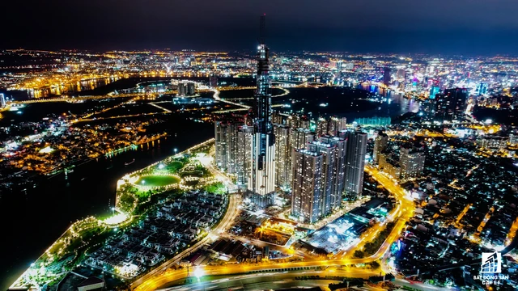
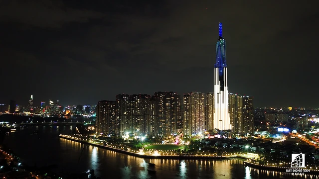
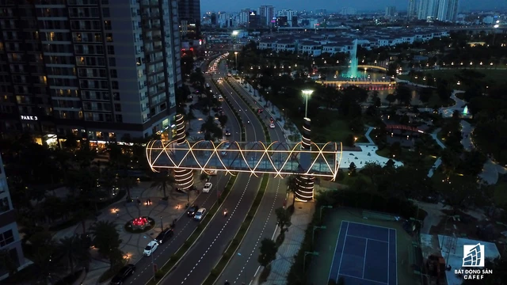

Tòa nhà cao nhất Việt Nam lung linh về đêm giữa Sài Gòn xa hoa
Địa chỉ: số 208 Nguyễn Hữu Cảnh, phường 22, quận Bình Thạnh, thành phố Hồ Chí Minh. Giờ mở cửa: ngày trong tuần 07:00 - 20:00; ngày cuối tuần 07:00 - 21:00
Được bố trí trong 6 tầng từ B1 tới tầng 5 của tòa tháp Landmark 81 có chiều cao kỷ lục 461,3m, thuộc top những tòa nhà cao nhất thế giới, Vincom Center Landmark 81 có quy mô rộng gần 50.000m2. Đây là TTTM được thiết kế cao cấp bậc nhất với ứng dụng hệ thống đèn trần LED có thể trình diễn hiệu ứng chuyển động ánh sáng độc đáo lần đầu tiên xuất hiện tại Việt Nam.
 Landmark 81 là 1 trong 10 tòa nhà cao nhất thế giới và được xem là biểu tượng của sự sang trọng, hiện đại. Tòa nhà cao tầng này được xây dựng trong khuôn viên rộng lớn tại quận Bình Thạnh, TPHCM. Về đêm, tòa tháp lung linh, tráng lệ giữa thành phố với hệ thống đèn led đa sắc liên tục đổi màu khiến nhiều người thích thú. Đặc biệt hơn, bên trong Landmark 81 là hệ thống khách sạn, hồ bơi sang trọng, các câu lạc bộ thượng lưu và cả những quán bar cao cấp - điểm đến lý tưởng để khám phá Sài Gòn về đêm. Nổi bật nhất trong số đó phải kể đến Blue Pearl Bar. Blue Pearl Bar nằm trên tầng 47 tòa Landmark 81 nổi bật với phong cách sang trọng, cuốn hút như viên ngọc South Sea xinh đẹp. Quầy bar được thiết kế gần hồ bơi, phục vụ các loại mocktails, cocktail độc đáo, mang đậm dấu ấn của Vinpearl Landmark 81, Autograph Collect
